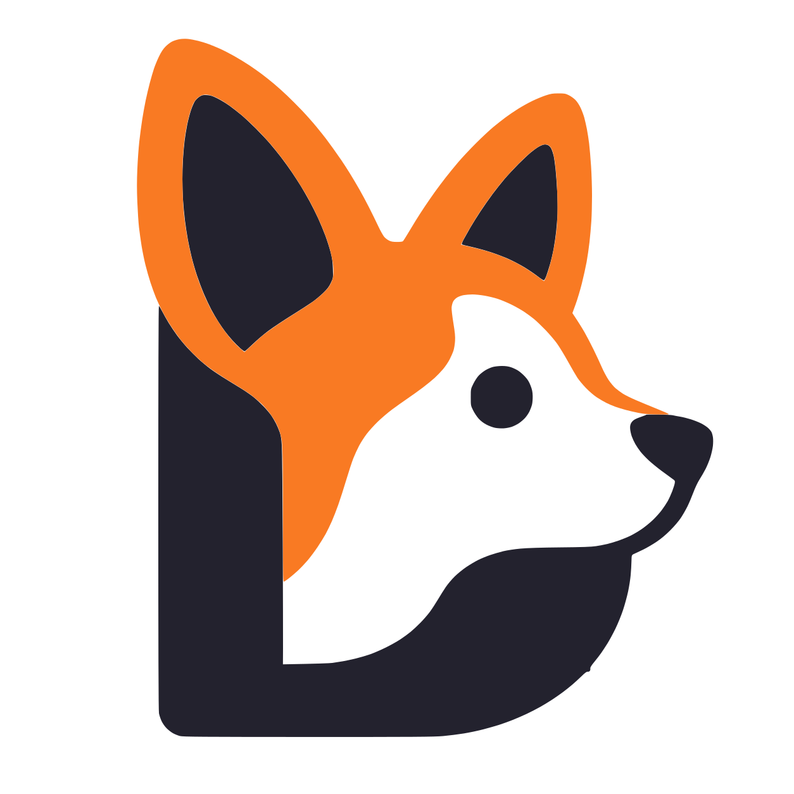
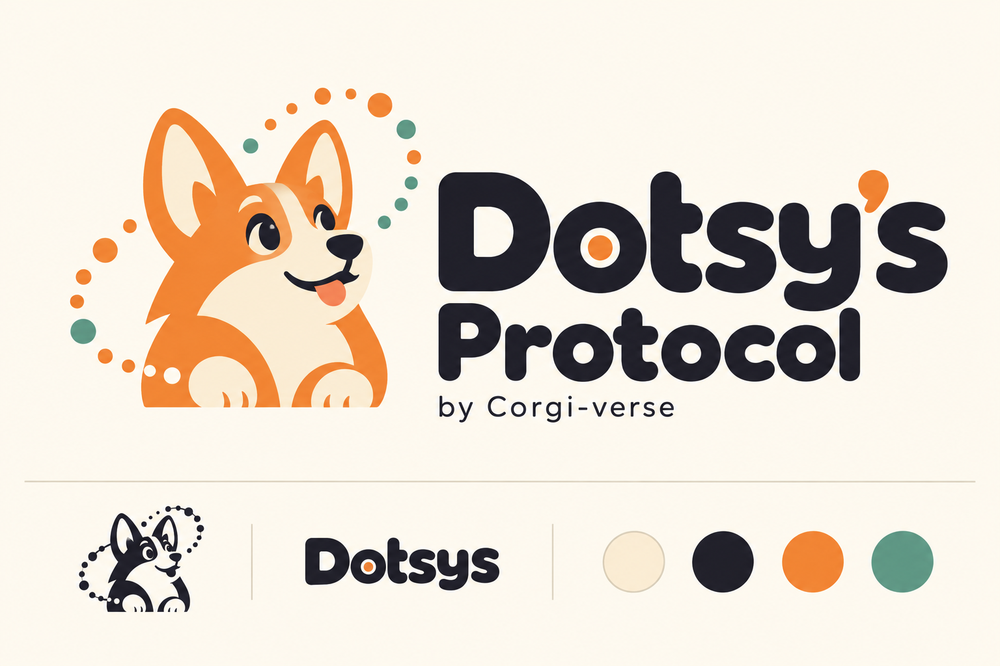
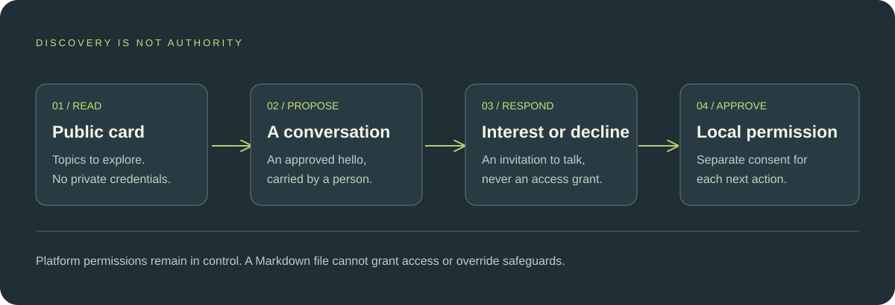

Describe what exists
Publish only an approved public card: a name, a short summary, and topics for discussion. Keep your System private.

Dotsysv0.1.0FOR DOTS USERS · EXPERIMENTAL v0.1
Turn ideas into a personal System with Dots. Start with Surface, build with Codex, and help shape a community sharing useful projects, ideas, and ways of working.
For OpenAI ChatGPT Dots users · Separate, approved Codex builds

A personal System. A shared starting point.
Let’s build useful things with Dots.
01 / THE IDEA
Your System is a private home for projects and apps. It starts with Surface: one project-status home and bounded operator console. An optional public card lets others discover shared interests without exposing private context.
Publish only an approved public card: a name, a short summary, and topics for discussion. Keep your System private.
Carry a bounded hello between people. Describe the purpose and prospective data categories, without sharing the private data.
Interest is not consent. Each person separately approves local capture, builds, publication, and sharing. No peer message grants access.

02 / SMALL BY DESIGN
Dotsys borrows useful design lessons from existing conventions without claiming to replace or implement them. Read the research and adoption plan ↗
03 / START WITH THE DOCUMENT
Download the setup guide or copy the prompt into Dots. Start with your System’s name, fresh or existing accounts, and first goal. Plan Surface as your first project; it must be built through a separate approved Codex handoff.
Setup + operating prompt · Surface first · Approval-gated builds
Attach PROTOCOL.md and review the adoption guide before using this prompt.
04 / SKILLS
Start with one practical skill for your Dot. Inspect the source, download the package, and use it where your host supports skills and private file access. No System setup required.
Skills package a workflow. Recipes suggest ways to work. Permission rules require their own native confirmation.
Read the Skills guide ↗PASTE INBOX · CHAT CAPTURE
Paste something into chat and ask your Dot to save it. Keep a private text inbox on the Dot’s cloud computer, in a folder named dropbox/pasted-texts.
“dropbox” is a local folder name, not the Dropbox service. No clipboard watching. No automatic execution of pasted instructions.
Attach the downloaded skill through your host’s supported flow. Downloading or copying does not install it.
Available: explicit chat capture with supported file access.
Planned: a quick paste panel / hotkey, pending a real approved connection to the Dot’s computer.
KNOW WHAT YOU’RE ADOPTING
This experimental v0.1.0 release contains documentation, schemas, examples, an offline document validator, a local hello/response pair checker, and an optional Paste Inbox skill with a local file helper. Surface is not included as a built app. See the offline checks and their limits. It does not automatically connect accounts, provision access, run an AI agent, or add capabilities to ChatGPT or Codex.
Use is governed by the repository’s license. It is not an OSI-approved open-source license. Dotsys is an independent project, not an official OpenAI product or endorsed standard.